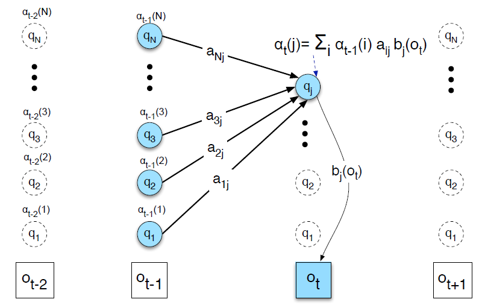
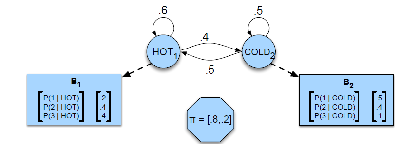
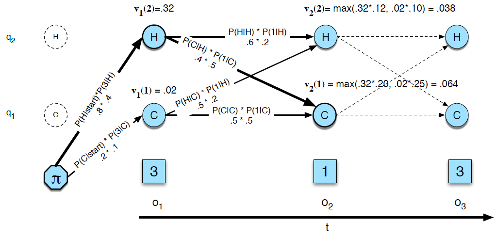
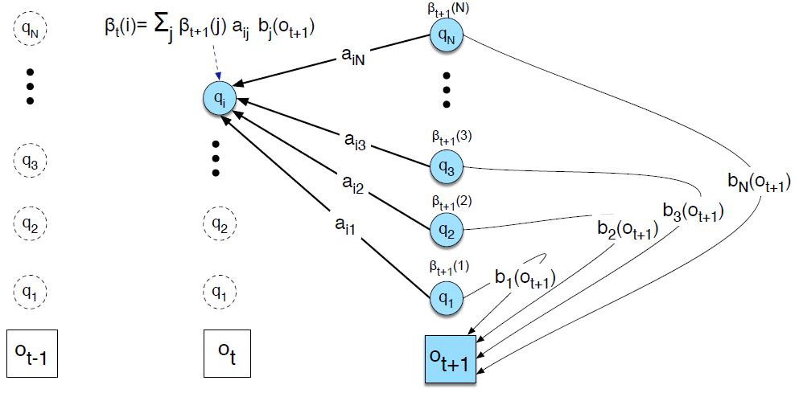
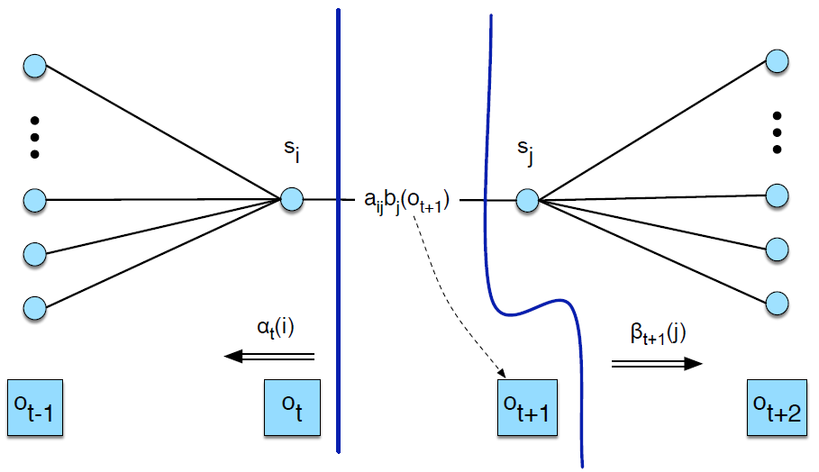
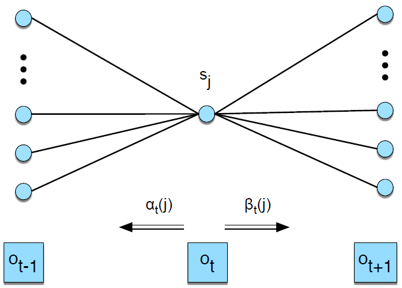

HMM
关于HMM的三个基础问题:
-
评估观察序列概率(Likelihood)。即给定模型 $\lambda=(A,B,\pi)$ 和观察序列 $O=\left{ o_{1},o_{2},…,o_{T} \right}$ ，计算在模型 $\lambda$ 下观测序列 $O$ 出现的概率 $P(O|\lambda)$
-
模型参数学习问题。即给定观测序列 $O=\left{ o_{1},o_{2},…,o_{T} \right}$ ，估计模型 $\lambda=(A,B,\pi)$ 的参数，使该模型下观测序列的条件概率 $P(O|\lambda)$ 最大。这个问题的求解需要用到基于EM算法的鲍姆-韦尔奇算法， 这个问题是HMM模型三个问题中最复杂的。
-
预测问题，也称为解码问题。即给定模型 $\lambda=(A,B,\pi)$ 和观测序列 $O=\left{ o_{1},o_{2},…,o_{T} \right}$ ，求给定观测序列条件下，最可能出现的对应的状态序列，这个问题的求解需要用到基于动态规划的维特比算法，这个问题是HMM模型三个问题中复杂度居中的算法。
HMM基础问题之评估观察序列概率问题求解:前向算法(Forward Algorithm)
前向算法利用当前时间点算得的概率推导下一个时间步的概率.

如上图所示,圆圈内表示隐藏状态,方块内表示观察状态. 前一时刻经由隐藏状态 $i$ 获得观察状态 $o_1, o_2, …, o_{t-1}$ 的概率表示为 $\alpha_{t-1}(i)$. 那么下一时刻隐藏状态为 $j$ 的概率就可以表示为上一时刻所有路线的概率乘上转移到 $j$ 的概率并求和得到:
$P(q_t=j) = \sum_{i=1}^{N} \alpha_{t-1}(i) a_{i j}$
经由 $q_t=j$ 得到观察状态 $o_1, o_2, …, o_t$ 的概率在 $P(q_t=j)$ 的基础上乘上观察概率 $b_j(o_t)$ 便可得到:
$\alpha_{t}(j)=\sum_{i=1}^{N} \alpha_{t-1}(i) a_{i j} b_{j}\left(o_{t}\right)$
至此我们便得到了由上一时刻所有路线概率求取一下时刻路线概率的"前向"方法,我们只需要知道初始时刻的概率便可求解整个问题. 在初始时刻,隐藏状态属于 $i$ 的概率表示为 $\pi_i$. 由隐藏状态 $i$ 获得观察状态 $o_1$ 的概率为:
$\alpha_{1}(j)=\pi_{j} b_{j}\left(o_{1}\right) 1 \leq j \leq N$
在隐藏状态总数为 $N$,观察序列长度为 $T$ 的情况下,前向算法可以整体表示为:
- 初始步: $\alpha_{1}(j)=\pi_{j} b_{j}\left(o_{1}\right) 1 \leq j \leq N$
- 前向递推过程: $\alpha_{t}(j)=\sum_{i=1}^{N} \alpha_{t-1}(i) a_{i j} b_{j}\left(o_{t}\right) ; \quad 1 \leq j \leq N, 1<t \leq T$
- 终止: $P(O \mid \lambda)=\sum_{i=1}^{N} \alpha_{T}(i)$
HMM基础问题之解码问题求解: Viterbi 算法
解码问题是在已知HMM参数 $\lambda=(A, B)$ 和观察序列 $O=o_{1}, o_{2}, \dots, o_{T}$ 的条件下,寻找概率最大的隐藏状态序列 $Q=q_{1} q_{2} q_{3} \ldots q_{T}$.
与前向算法(Forward Algorithm)一样, Viterbi 算法也是一种基于树的动态规划算法. 在此, 我们利用根据吃冰淇凌个数推断天气的例子来说明 Viterbi 算法. 下图展示了本例中的 HMM 参数. 其中, 实线箭头表示转移概率, $\pi$ 表示初始时刻天气为Hot 和 Cold 的概率分别为 0.8 和 0.2. $B$ 是观察概率.

问题:已知连续三天吃的冰淇凌个数分别为 3, 1, 3, 求这三天最有可能的天气情况. 下图展示了 Viterbi 的算法过程:

如上图所示, 每一个 $v_t(j)$ 表示在 $t$ 时刻, 在已知观察序列 $o_1, o_2,…, o_t$ 的情况下, 经历 $q_1, q_2,…, q_t$ 所有路径中, 最大的概率:
$v_{t}(j)=\max _{q_{1}, \ldots, q_{t-1}} P\left(q_{1} \ldots q_{t-1}, o_{1}, o_{2} \ldots o_{t}, q_{t}=j \mid \lambda\right)$
如果在 $t$ 时刻, v_{t}(j) 即最大概率路径是 ${q_1,q_2,…,q_{t-1},q_t}$, 那么在 $t-1$ 时刻, 隐藏状态为 $q_{t-1}$ 的最大概率路径一定是跟 ${q_1,q_2,…,q_{t-1},q_t}$ 重合的, 即${q_1,q_2,…,q_{t-1}}$. 因此, $v_t(j)$ 可以写成递推的形式:
$v_{t}(j)=\max _{i=1}^{N} v_{t-1}(i) a_{i j} b_{j}\left(o_{t}\right)$
我们可以发现, Viterbi 算法的递推公式和前向算法的递推公式的形式几乎是一致的, 唯一的不同点在于 Viterbi 算法是求所有路径概率中的最大概率, 而前向算法则是求所有路径概率的和. 前向算法的目的是求得最终的概率, 而 Viterbi 算法的最终目的是给出最有可能的隐藏状态序列, 因此在 Viterbi 的计算过程中, 需要跟踪最大概率路线中每个节点的状态. 因此, Viterbi 算法可以总结为:
-
初始状态 $v_{1}(j)=\pi_{j} b_{j}\left(o_{1}\right) \quad 1 \leq j \leq N$ $b t_{1}(j)=0 \quad 1 \leq j \leq N$
-
递推过程 $v_{t}(j)=\max _{i=1}^{N} v_{t-1}(i) a_{i j} b_{j}\left(o_{t}\right) ; \quad 1 \leq j \leq N, 1<t \leq T$
$b t_{t}(j)=\underset{i=1}{\operatorname{argmax}} v_{t-1}(i) a_{i j} b_{j}\left(o_{t}\right) ; \quad 1 \leq j \leq N, 1<t \leq T$
-
终止 The best score: $P *=\max {i=1}^{N} v{T}(i)$ The start of backtrace: $\quad q_{T} *=\underset{i=1}{\operatorname{argmax}} v_{T}(i)$
HMM基础问题之模型参数评估求解: 前向-后向算法(Forward-Backward Algorithm / Baum Welch Algorithm)
模型参数评估是在给定一个观察序列 $O$ 和一系列隐藏状态的条件下, 学习HMM的参数 $A$ 和 $B$.
Forward-backward 算法是训练 HMM 的一个标准算法, 是期望最大算法(Expectation-Maximizaiton, EM)一种特殊情况. EM 算法通过计算一个初始的概率分布, 然后利用初始概率分布计算一个更好的评估结果, 并通过迭代的方式获得更优的学习结果. 同样的, Forword-backward 算法也通过迭代的方式学习 HMM 的转移概率矩阵 $A$ 和观察概率 $B$.
在介绍利用 Forward-backward 算法求解该问题前, 我们仿照前向算法定义一下后向算法. 我们用后向概率 $\beta_{t}(i)$ 表示在 $t$ 时刻, 隐藏状态为 $i$, HMM 参数为 $\lambda$ 的情况下, 观察序列 {o_{t+1},o_{t+2},…,o_T}的概率:
$\beta_{t}(i)=P\left(o_{t+1}, o_{t+2} \ldots o_{T} \mid q_{t}=i, \lambda\right)$

如上图所示, 后向算法的递推方式跟前向算法是一致的, 所以后向算法可以表示为:
- 初始状态: $\beta_{T}(i)=1, \quad 1 \leq i \leq N$
- 递推过程: $\beta_{t}(i)=\sum_{j=1}^{N} a_{i j} b_{j}\left(o_{t+1}\right) \beta_{t+1}(j), \quad 1 \leq i \leq N, 1 \leq t<T$
- 终止: $P(O \mid \lambda)=\sum_{j=1}^{N} \pi_{j} b_{j}\left(o_{1}\right) \beta_{1}(j)$
接下来, 我们利用前向和后向概率来学习 HMM 的参数. 通过 EM 算法求得的转移概率, 我们用 $\hat{a}_{i j}$ 表示, 其由下式得出:
$\hat{a}_{i j}=\frac{\text { expected number of transitions from state } i \text { to state } j}{\text { expected number of transitions from state } i}$
假定我们知道在特定时刻 $t$ 发生的 $i \rightarrow j$ 的概率, 那么对所有 $t$ 上的 $i \rightarrow j$ 概率相加便可得到总的 $i \rightarrow j$ 转移概率. 在此, 我们令 $\xi_{t}$ 表示在给定观察序列 $O$ 和模型参数下 $q_t=i, q_{t+1}=j$ 的概率:
$\xi_{t}(i, j)=P\left(q_{t}=i, q_{t+1}=j \mid O, \lambda\right)$
在上式中, 观察状态序列 $O$ 和 HMM 参数 $\lambda$ 都属于已知条件, 而在我们上述讲到的前向算法和后向算法中,已知条件只有 $\lambda$, 因此在求解 $\xi_{t}(i, j)$, 我们不妨先对下式进行求解:
not-quite- $\xi_{t}(i, j)=P\left(q_{t}=i, q_{t+1}=j, O \mid \lambda\right)$
从 not-quite- $\xi_{t}$ 中, 我们不难发现其包含三层概率: 1) 在 $t$ 时刻处于状态 $i$ 的概率 2) 在 $t+1$ 时刻处于状态 $j$ 的概率, 和 3) 从状态 $i$ 转移到 $j$ 的概率.

如上图所示, 根据 forward 算法, 我们可以得到在 $t$ 时刻处于 $i$ 的概率为 $\alpha_{t}(i)$, 在 $t+1$ 时刻处于 $j$ 的概率为 $\beta_{t+1}(j)$, 从 $i$ 转移到 $j$ 并要保证 $t+1$ 时刻的观察状态是 $o_{t+1}$ 的概率为 $a_{ij}b_j(o_{t+1})$. 将上述三种概率相乘便可得到:
not-quite- $\xi_{t}(i, j)=\alpha_{t}(i) a_{i j} b_{j}\left(o_{t+1}\right) \beta_{t+1}(j)$
我们可以依据下式, 由 not-quite- $\xi_{t}(i, j)$ 计算 $\xi_{t}(i, j)$
$P(X \mid Y, Z)=\frac{P(X, Y \mid Z)}{P(Y \mid Z)}$
即:
$\xi_{t}(i, j)=P\left(q_{t}=i, q_{t+1}=j \mid O, \lambda\right) = \frac{P\left(q_{t}=i, q_{t+1}=j, O \mid \lambda\right)}{P(O \mid \lambda)} = \frac{not-quite- \xi_{t}(i, j)}{P(O \mid \lambda)}$
分母 $P(O \mid \lambda)$ 的表示: 在 $t$ 时刻经过状态 $j$ 并满足完整的观察状态序列 $O$ 的概率为 $\alpha_{t}(j) \beta_{t}(j)$. 那么在参数 $\lambda$ 下, 获得 $O$ 的概率 $P(O \mid \lambda)$ 可由 $t$ 时刻所有可能的隐藏概率的求和得到, 即:
$P(O \mid \lambda)=\sum_{j=1}^{N} \alpha_{t}(j) \beta_{t}(j)$
由此可得:
$\xi_{t}(i, j)=\frac{\alpha_{t}(i) a_{i j} b_{j}\left(o_{t+1}\right) \beta_{t+1}(j)}{\sum_{j=1}^{N} \alpha_{t}(j) \beta_{t}(j)}$
进一步可得:
$\hat{a}{i j}=\frac{\sum{t=1}^{T-1} \xi_{t}(i, j)}{\sum_{t=1}^{T-1} \sum_{k=1}^{N} \xi_{t}(i, k)}$
通过 EM 计算的观察概率可由下式表示
$\hat{b}{j}\left(v{k}\right)=\frac{\text { expected number of times in state } j \text { and observing symbol } v_{k}}{\text { expected number of times in state } j}$
定义 $t$ 时刻处于状态 $j$ 的概率:
$\gamma_{t}(j)=P\left(q_{t}=j \mid O, \lambda\right)$
同样地,我们利用下式计算 $\gamma_{t}(j)$ :
$\gamma_{t}(j)=\frac{P\left(q_{t}=j, O \mid \lambda\right)}{P(O \mid \lambda)}$

如上图所示(跟计算$a_{ij}$ 过程一样), $P\left(q_{t}=j, O \mid \lambda\right)$ 可由前向概率与后向概率的乘积得到, 因此上式变为:
$\gamma_{t}(j)=\frac{\alpha_{t}(j) \beta_{t}(j)}{P(O \mid \lambda)}$
利用在 $a_{ij}$ 的过程中用到的 $P(O \mid \lambda)$, 我们便求得了 $t$ 时刻处于 $j$ 的概率 $\gamma_{t}(j)$. 由此, 我们可以得到观察概率:
$\hat{b}{j}\left(v{k}\right)=\frac{\sum_{t=1}^{T} s_{. t . O_{t}=v_{k}} \gamma_{t}(j)}{\sum_{t=1}^{T} \gamma_{t}(j)}$
在求得 A, B 后, 我们对上述过程进行迭代进行下一轮 A, B 的更新. 如同其它的 EM 迭代算法一样, forward-backward 算法中同样分为两步: Expectation step (E-step) 和 Maximization step (M-step). 在 E-step 中, 我们上一步的 A, B 求 $\xi$ 和 $\gamma$. 在 M-step 中, 我们利用 $\xi$ 和 $\gamma$ 重新计算 A 和 B.
整个迭代过程如下:
function FORWARD-BACKWARD(observations of len T, output vocabulary V, hidden state set Q) returns HMM=(A,B)
initialize
iterate until convergence
E-step
$\gamma_{t}(j)=\frac{\alpha_{t}(j) \beta_{t}(j)}{\alpha_{T}\left(q_{F}\right)} \forall t$ and
$\xi_{t}(i, j)=\frac{\alpha_{t}(i) a_{i j} b_{j}\left(o_{t+1}\right) \beta_{t+1}(j)}{\alpha_{T}\left(q_{F}\right)} \forall t, i, \text{and}~j $
M-step
$\hat{a}{i j}=\frac{\sum{t=1}^{T-1} \xi_{t}(i, j)}{\sum_{t=1}^{T-1} \sum_{k=1}^{N} \xi_{t}(i, k)}$
$\hat{b}{j}\left(v{k}\right)=\frac{\sum_{t=1 s . t . O_{t}=v_{k}}^{T} \gamma_{t}(j)}{\sum_{t=1}^{T} \gamma_{t}(j)}$
return A, B
Xinsheng Wang
PhD candidate
My research interests include visually grounded speech learning, speech synthesis and computer vision.